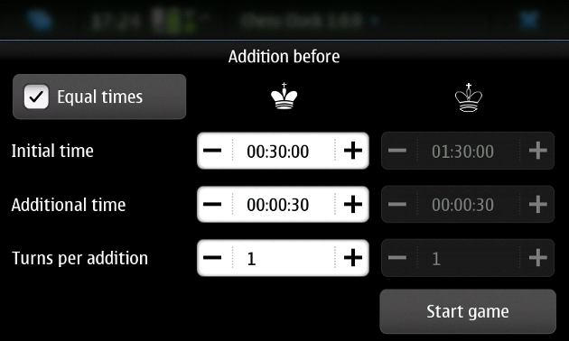
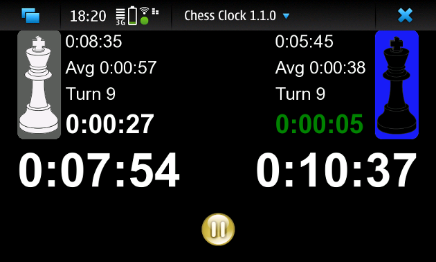
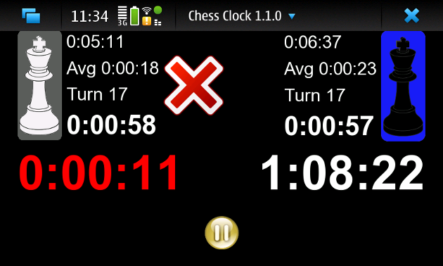
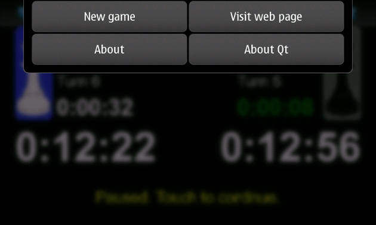

Welcome!
First touch one of the game modes to start the game.

You will be asked about the game options. The amount of
options depends on the selected game mode. On "Addition before" mode
the specified additional time is added at the beginning of a turn.

Touch
the screen to start the game. When the game is running, players touch
the screen to end their turns. Some information about the game is
shown. The game can be paused from the pause button and also gets
paused when the application goes to background. The screen is kept on
during a game unless its paused or an individual turn has lasted
over 30 minutes.

But don't waste your time. Red mark means that black has lost the game.
